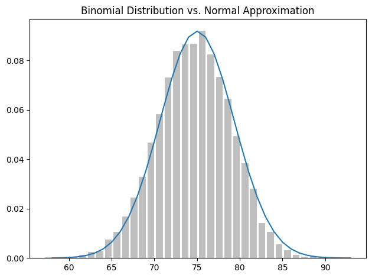

plot_lower_bound, plot_upper_bound = -1, 6
xs = np.arange(plot_lower_bound, plot_upper_bound, 0.1)
def uniform_pdf(x: float, lower: float, upper: float) -> float:
if lower <= x <= upper:
return 1 / (upper - lower)
else:
return 0
ys = [uniform_pdf(x, 0, 5) for x in xs]
fig, ax = plt.subplots(1, 1, tight_layout=True)
ax.plot(xs, ys)
ax.margins(x=0, y=0)
# ax.set_yticks(np.arange(0, max(ys)*1.1, 0.02))
ax.set_xticks(np.arange(plot_lower_bound, plot_upper_bound + 1))
ax.set_ylim(0, max(ys) * 1.25)
plt.title("Uniform PDF")
plt.show()Statistics
Descriptive Statistics
Mean
\[ \bar x = \frac 1 n \sum_ {i=1}^n x_i \]
Median
The median is the middle value in an ordered set of data. If there are an even number of values it is the average of the middle 2 values in the set.
Mode
The mode is the most common value (or values) in a set of data.
Dispersion
Dispersion refers to measures of how spread out our data is. The simplest measure of dispersion is the range which is the difference between the largest and smallest elements in a set of data.
Variance
A more sophisticated measure of dispersion is the variance. You can think of this as the average squared deviation from the mean. However we modify the sum by dividing by \(n-1\) because when dealing with a sample from a larger population, \(\bar{x}\) is only an estimate of the actual mean. On average this means \(x_i - \bar{x}\) is an underestimate of the true deviation which is why we divide by a smaller denominator.
[QUESTION: Why only subtract 1?]
[QUESTION: What if you actually do have the entire population?]
\[ S^2 = \frac {\sum {(x_i - \bar{x})}^2} {n - 1} \]
\(S^2\) = sample variance
\(x_i\) = value of the one observation
\(\bar{x}\) = mean value of all observations
\(n\) = number of observations
Standard Deviation
The standard deviation is the square root of the variance which means it is in the same units as the range of the dataset.
\[ S = \sqrt {\frac {\sum {(x_i - \bar{x})}^2} {n - 1}} \]
\(S^2\) = sample variance
\(x_i\) = value of the one observation
\(\bar{x}\) = mean value of all observations
\(n\) = number of observations
Interquartile Range
The interquartile range is the difference between the 75th and 25th percentile value. This is a simple measure but useful as it is not affected by outliers like the range and standard deviation are.
Covariance
Whereas variance measures how a single variable deviates from its mean, covariance measures how two variables vary in tandem from their means.
\[ cov_{x,y} = \frac {\sum {(x_i - \bar{x})(y_i - \bar{y})}} {N - 1} \]
\(cov_{x,y}\) = covariance between variable x and y
\(x_i\) = data value of x
\(y_i\) = data value of y
\(\bar{x}\) = mean of x
\(\bar{y}\) = mean of y
\(N\) = number of data values
A “large” positive covariance means that \(x\) tends to be large when \(y\) is large and small when y is small. A “large” negative covariance means the opposite — that \(x\) tends to be small when \(y\) is large and vice versa. A covariance close to zero means that no such relationship exists.
Covariance can be hard to interpret because:
- Its units are the product of the inputs’ units which can be hard to make sense of.
- If each every value of \(x\) was doubled (with \(y\) staying the same) the covariance would be twice as large. But the variables would be just as interrelated. So it’s hard to say what counts as a “large” covariance.
Correlation
Pearson’s correlation coefficient is the covariance of the two variables divided by the product of their standard deviations:
\[ \rho(X,Y) = \frac {cov(X,Y)}{\sigma(X)\sigma(Y)} \]
\(cov\) = the covariance
\(\sigma(X)\) = the standard deviation of X
\(\sigma(Y)\) = the standard deviation of Y
Correlation shows us relationships in which knowing how \(x_i\) compares to the mean of \(x\) gives us information about how \(y_i\) compares to the mean of \(y\). Other types of relationship may not show up. It also doesn’t tell us how large the relationship is. It is also the case that if \(E\) and \(F\) are independent if the probability of them both happening is equal to the product of the probability of each one happening.
Simpson’s Paradox
Probability
Notationally, \(P(E)\) means the probability of the event \(E\).
Events \(E\) and \(F\) are dependent if inforamation about whether \(E\) happens gives us information about whether \(F\) happens or vice versa. Otherwise the two events are independent of each other.
\[ P(E,F) = P(E)P(F) \]
If the two events are not necessarily independent (and the probability of \(F\) is not 0) we define probability of \(E\) given \(F\) as:
\[ P(E|F) = \frac {P(E,F)}{P(F)} \]
This is often written as:
\[ P(E,F) = P(E|F)P(F) \]
When \(E\) and \(F\) are independent this means:
\[ P(E|F) = P(E) \]
Let’s ask what is the probability “both children are girls” conditional on the event “the older child is a girl”?
We use the definition of conditional probability and the fact that the event \(Both\) and \(Girl\) (“both children are girls and the older child is a girl”) is the same as the event \(Both\).
\[ \begin{align} P(Both|Girl) &= \frac {P(Both, Girl)}{P(Girl)} \notag \\ &= \frac {P(Both)}{P(Girl)} \notag \\ &= \frac {1}{2} \notag \end{align} \]
We can also ask about the probability of the event “both children are girls” conditional on the event “at least one of the children is a girl” (\(At\ Least\ One\)). Surprisingly, the answer is different from before. If all you know is that at least one of the children is a girl, then it is twice as likely that the family has one boy and one girl than that it has both girls.
\[ \begin{align} P(Both | At\ Least\ One) &= \frac {P(Both, At\ Least\ One)} {P(At\ Least\ One)} \notag \\ &= \frac {P(Both)} {P(At\ Least\ One)} \notag \\ &= \frac {1}{3} \notag \end{align} \]
Bayes’ Theorem
Bayes’s theorem is a way of “reversing” conditional probabilities. If we need to know the probability of some event \(E\) conditional on some other event \(F\) occurring but we only have information about the probability of \(F\) conditional on \(E\) occurring, using the definition of conditional probability twice tells us that:
\[ \begin{align} P(E | F) &= \frac {P(E, F)} {P(F)} \notag \\ &= \frac {P(F | E)P(E)} {P(F)} \notag \\ \end{align} \]
The event \(F\) can be split into the two mutually exclusive events “\(F\) and \(E\)” and “\(F\) and not \(E\)”. We write \(\neg\) for “not”.
\[ \begin{align} P(F) &= P(F, E) + P(F, \neg E) \notag \\ P(E | F) &= \frac {P(F | E)P(E)} {P(F, E)P(E) + P(F, \neg E)P(\neg E)} \notag \\ \end{align} \]
If a disease has a 1 in 10000 chance of occurring (\(P(Disease) = 0.0001\)) and a test has a 99% chance of giving a positive result when someone has the disease (\(P(Positive|Disease) = 0.99\)) we would apply Bayes Theorum like so:
\[ \begin{align} P(Disease | Positive) &= \frac {P(Positive | Disease)P(Disease)} {P(Positive | Disease)P(Disease) + P(Positive | \neg Disease)P(\neg Disease)} \notag \\ &= \frac {0.99 \times 0.0001}{0.99 \times 0.0001 + 0.01 \times 0.9999} \notag \\ &\approx 0.0098 \notag \\ &= 0.98\% \notag \end{align} \]
Note that this assumes people take the test roughly at random. If only people with certain symptoms take the test, we would have to condition on the event “positive result and symptoms” and the number would likely be a lot higher.
We can also view this problem using natural frequencies. In a population of 1 million people you’d expect 100 of them to have the disease, and 99 of those 100 to test positive. On the other hand, you’d expect 999,900 of them not to have the disease, and 9,999 of those to test positive. That means you’d expect only 99 out of 10098 (99 + 9999) positive testers to actually have the disease which is roughly 0.98%.
Random Variables
A random variable is a variable whose possible values have an associated probability distribution. The expected value of a random variable is the average of its values weighted by their probabilities.
A very simple random variable equals 1 if a coin flip turns up heads and 0 if the flip turns up tails. The variable equals 0 with probability 0.5 and 1 with probability 0.5. It has an expected value of \(\frac{1}{2} = (0 * \frac{1}{2} + 1 * \frac{1}{2})\)
A more complicated random variable might measure the number of heads you observe when flipping a coin 10 times or a value picked from range(10) where each number is equally likely. The associated distribution gives the probabilities that the variable realizes each of its possible values. In this case the variable has a distribution that assigns probability 0.1 to each of the numbers from 0 to 9. Flipping a coin 10 times has an expected value of 5.5. The range(10) variable has an expected value of 4.5.
\[ E(X) = \sum {X_iP(X_i)} \]
\(X_i\) = The values that X can take
\(P(X_i)\) = The probability that X takes the value \(X_i\)
Random variables can be conditioned on events just as other events can. Going back to the two-child example, if \(X\) is the random variable representing the number of girls, \(X\) equals 0 with probability \(1 \over 2\) \(\frac{1}{4}\), 1 with probability \(\frac{1}{2}\), and 2 with probability \(\frac{1}{4}\). We can define a new random variable \(Y\) that gives the number of girls conditional on at least one of the children being a girl. Then \(Y\) equals 1 with probability \(\frac{2}{3}\) and 2 with probability \(\frac{1}{3}\). And a variable \(Z\) that’s the number of girls conditional on the older child being a girl equals 1 with probability \(\frac{1}{2}\) and 2 with probability \(\frac{1}{2}\).
Continuous Distributions
A coin flip corresponds to a discrete distribution — one that associates positive probability with discrete outcomes. Often we’ll want to model distributions across a continuum of outcomes. Because there are infinitely many numbers between 0 and 1, this means that the weight it assigns to individual points is be zero (for our purposes these outcomes will always be real numbers although that’s not always the case in real life). We represent a continuous distribution with a probability density function (PDF) such that the probability of seeing a value in a certain interval equals the integral of the density function over the interval. The cumulative distribution function (CDF) gives the probability that a random variable is less than or equal to a certain value.
Uniform Distribution
The uniform distribution puts equal weight on all the numbers between 0 and 1.
Probability density function
\[ f(x) = \begin{cases} \frac{1}{b-a} & a \leq x \leq b \\ 0 & \text{otherwise} \end{cases} \]
Cumulative distribution function
\[ F(x) = \begin{cases} 0 & x < a \\ \frac{x-a}{b-a} & a \leq x \leq b \\ 1 & x > b \end{cases} \]
def uniform_cdf(x: float, lower: float, upper: float) -> float:
"""Returns the probability that a uniform random variable is <= x"""
if x < lower:
return 0 # uniform random is never less than 0
elif x < upper:
return (x - lower) / (upper - lower) # e.g. P(X <= 0.4) = 0.4
else:
return 1 # uniform random is always less than 1
ys = [uniform_cdf(x, 0, 5) for x in xs]
fig, ax = plt.subplots(1, 1, tight_layout=True)
ax.plot(xs, ys)
ax.margins(x=0, y=0)
ax.set_ylim(0, max(ys) * 1.25)
ax.set_xticks(np.arange(plot_lower_bound, plot_upper_bound + 1))
plt.title("Uniform CDF")
plt.show()Normal Distribution
The normal distribution is a continuous distribution that is symmetric about its mean. It is defined by two parameters: the mean \(\mu\) and the standard deviation \(\sigma\). The normal distribution is the most important continuous distribution in statistics. It is often used to model random variables that are the sum of many independent random variables. It is also the basis for the t-distribution, which is used to model the distribution of sample means.
Probability density function
\[ f(x|\mu,\sigma) = \frac{1}{\sigma \sqrt{2 \pi}} e^{-\frac{(x-\mu)^2}{2 \sigma^2}} \]
def normal_pdf(x: float, mu: float = 0, sigma: float = 1) -> float:
return math.exp(-((x - mu) ** 2) / 2 / sigma**2) / (math.sqrt(2 * math.pi) * sigma)
xs = [x / 10.0 for x in range(-50, 50)]
fig, ax = plt.subplots(1, 1, tight_layout=True)
ax.plot(xs, [normal_pdf(x, sigma=1) for x in xs], "-", label="mu=0,sigma=1")
ax.plot(xs, [normal_pdf(x, sigma=2) for x in xs], "--", label="mu=0,sigma=2")
ax.plot(xs, [normal_pdf(x, sigma=0.5) for x in xs], ":", label="mu=0,sigma=0.5")
ax.plot(xs, [normal_pdf(x, mu=-1) for x in xs], "-.", label="mu=-1,sigma=1")
ax.legend()
plt.title("Various Normal pdfs")
plt.show()When \(\mu\)=0 and \(\sigma\)=1 it is called the standard normal distribution. If \(Z\) is a standard normal random variable, then it turns out that \(X = \sigma Z + \mu\) is also normal but with mean \(\mu\) and standard deviation \(\sigma\). Conversely, if \(X\) is a normal random variable with mean \(\mu\) and standard deviation \(\sigma\) then \(Z = \frac{X-\mu}{\sigma}\) is a standard normal variable.
Cumulative distribution function
The CDF for the normal distribution cannot be written in an “elementary” manner, but we can write it using Python’s math.erf error function:
def normal_cdf(x: float, mu: float = 0, sigma: float = 1) -> float:
return (1 + math.erf((x - mu) / math.sqrt(2) / sigma)) / 2
xs = [x / 10.0 for x in range(-50, 50)]
fig, ax = plt.subplots(1, 1, tight_layout=True)
ax.plot(xs, [normal_cdf(x, sigma=1) for x in xs], "-", label="mu=0,sigma=1")
ax.plot(xs, [normal_cdf(x, sigma=2) for x in xs], "--", label="mu=0,sigma=2")
ax.plot(xs, [normal_cdf(x, sigma=0.5) for x in xs], ":", label="mu=0,sigma=0.5")
ax.plot(xs, [normal_cdf(x, mu=-1) for x in xs], "-.", label="mu=-1,sigma=1")
ax.legend(loc=4) # bottom right
plt.title("Various Normal cdfs")
plt.show()Sometimes we’ll need to invert the normal CDF to find the value corresponding to a specified probability. There’s no simple way to compute its inverse, but normal_cdf is continuous and strictly increasing, so we can use a binary search. The function repeatedly bisects intervals until it narrows in on a \(Z\) that’s close enough to the desired probability.
def inverse_normal_cdf(p: float, mu: float = 0, sigma: float = 1, tolerance: float = 0.00001) -> float:
"""Find approximate inverse using binary search"""
# if not standard, compute standard and rescale
if mu != 0 or sigma != 1:
return mu + sigma * inverse_normal_cdf(p, tolerance=tolerance)
low_z = -10.0 # normal_cdf(-10) is (very close to) 0
hi_z = 10.0 # normal_cdf(10) is (very close to) 1
while hi_z - low_z > tolerance:
mid_z = (low_z + hi_z) / 2 # Consider the midpoint
mid_p = normal_cdf(mid_z) # and the CDF's value there
if mid_p < p:
low_z = mid_z # Midpoint too low, search above it
else:
hi_z = mid_z # Midpoint too high, search below it
return mid_zThe Central Limit Theorem
One reason the normal distribution is so useful is the central limit theorem, which says (in essence) that a random variable defined as the average of a large number of independent and identically distributed random variables is itself approximately normally distributed.
In particular, if \(x_1, ..., x_n\) are random variables with mean \(\mu\) and standard deviation \(\sigma\), and if \(n\) is large, then \(\frac{1}{n} (x_1 + ... + x_n)\) is approximately normally distributed with mean \(\mu\) and standard deviation \(\frac{\sigma}{\sqrt{n}}\). Equivalently (but often more usefully), \(\frac{(x_1 + ... + x_n) - \mu n}{\sigma \sqrt{n}}\) is approximately normally distributed with mean 0 and standard deviation 1.
An easy way to illustrate this is by looking at binomial random variables, which have two parameters \(n\) and \(p\). A \(Binomial(n,p)\) random variable is simply the sum of \(n\) independent \(Bernoulli(p)\) random variables, each of which equals 1 with probability \(p\) and 0 with probability \(1 – p\). The mean of a \(Bernoulli(p)\) variable is \(p\), and its standard deviation is \(\sqrt{p(1-p)}\). The central limit theorem says that as \(n\) gets large, a \(Binomial(n,p)\) variable is approximately a normal random variable with mean \(\mu = np\) and standard deviation \(\sigma = \sqrt{np(1-p)}\). If we plot both, you can easily see the resemblance:
def bernoulli_trial(p: float) -> int:
"""Returns 1 with probability p and 0 with probability 1-p"""
return 1 if random.random() < p else 0
def binomial(n: int, p: float) -> int:
"""Returns the sum of n bernoulli(p) trials"""
return sum(bernoulli_trial(p) for _ in range(n))
def binomial_histogram(p: float, n: int, num_points: int) -> None:
"""Picks points from a Binomial(n, p) and plots their histogram"""
fig, ax = plt.subplots(1, 1, tight_layout=True)
data = [binomial(n, p) for _ in range(num_points)]
# use a bar chart to show the actual binomial samples
histogram = Counter(data)
ax.bar([x - 0.4 for x in histogram.keys()], [v / num_points for v in histogram.values()], 0.8, color="0.75")
mu = p * n
sigma = math.sqrt(n * p * (1 - p))
# use a line chart to show the normal approximation
xs = range(min(data), max(data) + 1)
ys = [normal_cdf(i + 0.5, mu, sigma) - normal_cdf(i - 0.5, mu, sigma) for i in xs]
ax.plot(xs, ys)
plt.title("Binomial Distribution vs. Normal Approximation")
plt.show()binomial_histogram(0.75, 100, 10000)
The moral of this approximation is that if you want to know the probability that e.g. a fair coin turns up more than 60 heads in 100 flips, you can estimate it as the probability that a \(Normal(50,5)\) is greater than 60, which is easier than computing the \(Binomial(100,0.5)\) CDF. (Although in most applications you’d probably be using statistical software that would gladly compute whatever probabilities you want.)
Inferential Statistics
Hypothesis Testing
Under various assumptions, statistics can be thought of as observations of random variables from known distributions, which allows us to make statements about how likely those assumptions are to hold. In the classical setup, we have a null hypothesis, \(H_0\), that represents some default position, and some alternative hypothesis, \(H_1\), that we’d like to compare it with. We use statistics to decide whether we can reject \(H_1\) as false or not. This will probably make more sense with an example.
Imagine we have a coin and we want to test whether it’s fair. We’ll make the assumption that the coin has some probability \(p\) of landing heads, and so our null hypothesis is that the coin is fair - that \(p = 0.5\). We’ll test this against the alternative hypothesis \(p \ne 0.5\). In particular, our test will involve flipping the coin \(n\) times and counting the number of heads \(X\). Each coin flip is a Bernoulli trial, which means that \(X\) is a \(Binomial(n,p)\) random variable, which we can approximate using the normal distribution. Whenever a random variable follows a normal distribution, we can use normal_cdf to figure out the probability that its realized value lies within or outside a particular interval.
def normal_approximation_to_binomial(n: int, p: float) -> Tuple[float, float]:
"""Returns mu and sigma corresponding to a Binomial(n, p)"""
mu = p * n
sigma = math.sqrt(p * (1 - p) * n)
return mu, sigma
# The normal cdf _is_ the probability the variable is below a threshold
normal_probability_below = normal_cdf
# It's above the threshold if it's not below the threshold
def normal_probability_above(lo: float, mu: float = 0, sigma: float = 1) -> float:
"""The probability that an N(mu, sigma) is greater than lo."""
return 1 - normal_cdf(lo, mu, sigma)
# It's between if it's less than hi, but not less than lo
def normal_probability_between(lo: float, hi: float, mu: float = 0, sigma: float = 1) -> float:
"""The probability that an N(mu, sigma) is between lo and hi."""
return normal_cdf(hi, mu, sigma) - normal_cdf(lo, mu, sigma)
# It's outside if it's not between
def normal_probability_outside(lo: float, hi: float, mu: float = 0, sigma: float = 1) -> float:
"""The probability that an N(mu, sigma) is not between lo and hi."""
return 1 - normal_probability_between(lo, hi, mu, sigma)We can also do the reverse — find either the nontail region or the (symmetric) interval around the mean that accounts for a certain level of likelihood. For example, if we want to find an interval centered at the mean and containing 60% probability, then we find the cutoffs where the upper and lower tails each contain 20% of the probability (leaving 60%):
def normal_upper_bound(probability: float, mu: float = 0, sigma: float = 1) -> float:
"""Returns the z for which P(Z <= z) = probability"""
return inverse_normal_cdf(probability, mu, sigma)
def normal_lower_bound(probability: float, mu: float = 0, sigma: float = 1) -> float:
"""Returns the z for which P(Z >= z) = probability"""
return inverse_normal_cdf(1 - probability, mu, sigma)
def normal_two_sided_bounds(probability: float, mu: float = 0, sigma: float = 1) -> Tuple[float, float]:
"""Returns the symmetric (about the mean) bounds that contain the specified probability"""
tail_probability = (1 - probability) / 2
# upper bound should have tail_probability above it
upper_bound = normal_lower_bound(tail_probability, mu, sigma)
# lower bound should have tail_probability below it
lower_bound = normal_upper_bound(tail_probability, mu, sigma)
return lower_bound, upper_boundLet’s say that we choose to flip the coin \(n = 1000\) times. If our hypothesis of fairness is true, \(X\) should be distributed approximately normally with mean 500 and standard deviation 15.8:
mu_0, sigma_0 = normal_approximation_to_binomial(1000, 0.5)
mu_0, sigma_0(500.0, 15.811388300841896)We need to make a decision about significance — how willing we are to make a type 1 error (“false positive”) in which we reject \(H_0\) even though it’s true. For reasons lost to the annals of history, this willingness is often set at 5% or 1%. Let’s choose 5%. Consider the test that rejects \(H_0\) if \(X\) falls outside the bounds given by:
lower_bound, upper_bound = normal_two_sided_bounds(0.95, mu_0, sigma_0)
lower_bound, upper_bound(469.01026640487555, 530.9897335951244)Assuming \(p\) really equals 0.5 (i.e. \(H_0\) is true) there is just a 5% chance we observe an \(X\) that lies outside this interval which is the exact significance we wanted. Said differently, if \(H_0\) is true, then, approximately 19 times out of 20, this test will give the correct result. We are also often interested in the power of a test, which is the probability of not making a type 2 error (“false negative”) in which we fail to reject \(H_0\) even though it’s false. In order to measure this we have to specify what exactly \(H_0\) being false means. (Knowing merely that \(p \ne 0.5\) doesn’t give us a ton of information about the distribution of X). In particular, let’s check what happens if \(p\) is really 0.55, so that the coin is slightly biased toward heads. In that case, we can calculate the power of the test with:
# 95% bounds based on assumption p is 0.5
lo, hi = normal_two_sided_bounds(0.95, mu_0, sigma_0)
print(lo, hi)
# actual mu and sigma based on p = 0.55
mu_1, sigma_1 = normal_approximation_to_binomial(1000, 0.55)
print(mu_1, sigma_1)
# a type 2 error means we fail to reject the null hypothesis which will happen when X is still in our original interval
type_2_probability = normal_probability_between(lo, hi, mu_1, sigma_1)
power = 1 - type_2_probability
print(power)469.01026640487555 530.9897335951244
550.0 15.732132722552274
0.8865480012953671Imagine instead that our null hypothesis was that the coin is not biased toward heads or that \(P \le 0.5\). In that case we want a one-sided test that rejects the null hypothesis when \(X\) is much larger than 500 but not when \(X\) is smaller than 500. So, a 5% significance test involves using normal_probability_below to find the cutoff below which 95% of the probability lies:
hi = normal_upper_bound(0.95, mu_0, sigma_0)
print(hi) # is 526 (< 531, since we need more probability in the upper tail)
type_2_probability = normal_probability_below(hi, mu_1, sigma_1)
power = 1 - type_2_probability # 0.936
print(power)526.0073585242053
0.9363794803307173This is a more powerful test, since it no longer rejects \(H_0\) when \(X\) is below 469 (which is very unlikely to happen if \(H_1\) is true) and instead rejects \(H_0\) when \(X\) is between 526 and 531 (which is somewhat likely to happen if \(H_1\) is true).
P-Values
An alternative way of thinking about the preceding test involves p-values. Instead of choosing bounds based on some probability cutoff, we compute the probability — assuming \(H_0\) is true — that we would see a value at least as extreme as the one we actually observed. For our two-sided test of whether the coin is fair, we compute:
def two_sided_p_value(x: float, mu: float = 0, sigma: float = 1) -> float:
"""
How likely are we to see a value at least as extreme as x (in either
direction) if our values are from an N(mu, sigma)?
"""
if x >= mu:
# x is greater than the mean, so the tail is everything greater than x
return 2 * normal_probability_above(x, mu, sigma)
else:
# x is less than the mean, so the tail is everything less than x
return 2 * normal_probability_below(x, mu, sigma)If we were to see 530 heads, we would compute:
two_sided_p_value(529.5, mu_0, sigma_0)0.06207721579598835Since the p-value is greater than our 5% significance, we don’t reject the null. If we instead saw 532 heads, the p-value would be:
two_sided_p_value(531.5, mu_0, sigma_0)0.046345287837786575and we would reject the null.
Make sure your data is roughly normally distributed before using normal_probability_above to compute p-values. The annals of bad data science are filled with examples of people opining that the chance of some observed event occurring at random is one in a million, when what they really mean is “the chance, assuming the data is distributed normally” which is fairly meaningless if the data isn’t. There are various statistical tests for normality but even plotting the data is a good start.
Continuity Corrections
We use a value of 529.5 rather than 530 because normal_probability_between(529.5, 530.5, mu_0, sigma_0) is a better estimate of the probability of seeing 530 heads than normal_probability_between(530, 531, mu_0, sigma_0). Correspondingly, normal_probability_above(529.5, mu_0, sigma_0) is a better estimate of the probability of seeing at least 530 heads.
T Tests/Distribution
ANOVA
When looking at data, you might want to know if two groups are different. ANOVA (analysis of variance) calculates the between group variance and the within group variance
The ratio of the SS (between SS divided by within SS) results is known as the F-statistic
Variance ratio (F) test
Regression
Noise reduction
Baysian Data Analysis
Bayesian data analysis takes a question in the form of a model and uses logic to produce an answer in the form of probability distributions.
In Baysian data analysis:
- For each possible explanation of the data, count all the ways the data can happen
- Explanations with more ways to produce the data are more plausible
Imagine a bag that contains 4 marbles. Some are blue and some are white. We don’t know in what proportion. A table of all the possible combinations looks like this. These possible combinations are our conjectures.
| B | B | B | B |
| B | B | B | W |
| B | B | W | W |
| B | W | W | W |
| W | W | W | W |
Now suppose that we draw 3 marbles from the bag with replacement. The results from that will be our data.
\[ BWB \]
How could we think about what the 4th marble is likely to be?
Notice that the number of ways to produce the data, for each conjecture, can be computed by first counting the number of paths in each “ring” of the garden and then by multiplying these counts together.
| Conjecture | Number of ways to produce the \[BWB\] | Plausibility |
|---|---|---|
| \[WWWW\] | \[0 \times 4 \times 0 = 0\] | 0 |
| \[BWWW\] | \[1 \times 3 \times 1 = 3\] | 0.15 |
| \[BBWW\] | \[2 \times 2 \times 2 = 8\] | 0.4 |
| \[BBBW\] | \[3 \times 1 \times 3 = 9\] | 0.45 |
| \[BBBB\] | \[4 \times 0 \times 4 = 0\] | 0 |
The rules for Baysian updating:
- State a causal model for how observations arise, given each possible explanation
- Count ways data could arise for each explanation
- Relative plausibility is relative value from (2)
Let’s suppose we draw another \[B\] from the bag. We can update our previous (prior) counts and update them in light of the new observation becuase the new observation is logically independent of the previous observations. First count the numbers of ways each conjecture could produce the new observation. Then multiply each of these new counts by the prior numbers of ways for each conjecture. In table form:
| Conjecture | Ways to produce \[B\] | Previous counts | New count | New plausibility |
|---|---|---|---|---|
| \[WWWW\] | 0 | 0 | \[0 \times 0 = 0\] | 0 |
| \[BWWW\] | 1 | 3 | \[3 \times 1 = 3\] | \[0.07\] |
| \[BBWW\] | 2 | 8 | \[8 \times 2 = 16\] | \[0.35\] |
| \[BBBW\] | 3 | 9 | \[9 \times 3 = 27\] | \[0.57\] |
| \[BBBB\] | 4 | 0 | \[0 \times 4 = 0\] | 0 |
Obviously you want to normalise these values which is why we have a plausibilty colum. You can can converts the counts to probabilities with the following formula:
\[ plausibility\ of\ p\ after\ D_{new} = \frac {ways\ p\ can\ produce\ D_{new} \times prior\ plausibility\ p} {sum\ of\ products} \]
Every updated set of plausibilities becomes the initial plausibilities for the next observation. Every conclusion is the starting point for future inference. This updating process works backwards as well as forwards. Given a final set of plausibilities and knowing the final observation \[W\] it is possible to mathematically divide out the observation to infer the previous plausibility curve. So the data could be presented to your model in any order, or all at once even. In most cases you will present the data all at once for convenience. This represents an abbreviation of an iterated learning process.
Some points about Baysian Inference:
- There is no such thing as a minimum sample size. The curve is likely to be flat and wide when you have little data but that’s fine. It might even be enough information to be useful in some sense.
- The shape of the curve embodies the sample size. As you get more data the curve gets narrower and taller.
- Point estimates don’t have a big role in Baysian data analyis because the the estimate is the curve/distribution. Always use the entire posterior distribution because to do otherwise is to throw away uncertainty and generate overconfident answers. Summary should always be the last step.
- Intervals don’t have a strong role in Baysian inference. How wide to make an interval or even where to centre it is an arbitrary descision.
What proportion of the Earth is covered by water? We aren’t going to visit literally every point on Earth. So how can we work this out? We can take a sample. Suppose we visit ten points of earth at random and record whether it is covered by land or water. Suppose these are our results :
\[ W, W, W, L, W, W, W, W, W, L \]
The counts of “water” \[W\] and “land’ \[L\] are distributed binomially, with probability p of “water” on each toss.
\[ Pr(W,L|p) = \frac {(W + L)!} {W!L!} p^W(1 − p)^L \]
A short way of writing our model
W ~ Binomial(N, p)
Where N = W + L
p ~ Uniform(0,1)